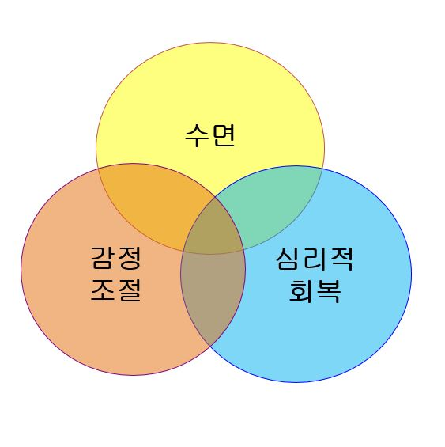

잠은 단순히 신체의 피로를 풀어주는 시간만이 아니다. 잠은 정서적 회복력과 깊은 연관이 있으며, 우리의 감정적 균형을 회복하고, 스트레스와 감정적 과부하를 해소하는 중요한 역할을 한다. 감정 회복력(emotional resilience)은 우리가 스트레스 상황에 적응하고, 부정적인 감정에서 회복하는 능력을 말하며, 이 능력은 수면의 질에 따라 크게 영향을 받는다.
본 장에서는 감정 회복력과 수면이 어떻게 상호작용하며, 수면이 정서적 회복에 중요한 역할을 하는지에 대해 심리학적 관점에서 살펴보고자 한다.
이 글은 브런치북( https://brunch.co.kr/@205593d149c84b6/3) 『감정도 잠이 필요하다』 '6장. 잠은 몸의 말이자, 감정의 언어였다'에 포함된 내용으로써 감정 회복력과 수면의 관계를 탐구한다.
1. 수면과 감정 회복력: 상호 작용의 기초
수면은 단순히 신체 회복에 그치지 않고, 감정 회복의 중요한 기회로 작용한다. 수면 중에는 뇌가 감정적 경험을 처리하고 정리하며, 이는 다음 날 우리가 감정적으로 더 안정적인 상태에서 하루를 시작할 수 있도록 돕는다.
수면은 감정 처리뿐만 아니라 감정 조절 능력을 강화하는 데도 중요한 역할을 한다. 특히, REM 수면은 감정 기억을 통합하고 정리하는 과정으로, 우리가 낮 동안 경험한 감정을 처리하고, 과거의 부정적인 경험으로부터 회복하는 데 중요한 영향을 미친다. 이 과정에서 뇌는 감정을 적절히 해석하고, 심리적 부담을 덜어내는 기능을 한다.
따라서 수면이 부족하거나 질이 나쁘면, 감정 회복력이 저하되어 스트레스 상황에 대한 반응이 과도하거나 부정적이 될 수 있다. 이처럼 수면과 감정 회복력은 밀접한 관계를 가지고 있으며, 둘 사이의 균형이 유지될 때 우리는 더 건강한 정서적 상태를 유지할 수 있다.
2. 감정 회복력의 증진: 수면의 역할
감정 회복력은 우리가 스트레스와 어려움을 겪을 때 얼마나 빠르게 회복할 수 있는지를 나타내며, 이는 수면의 질과 밀접하게 연결되어 있다. 수면은 감정의 재정비를 돕고, 일상적인 스트레스와 감정적 피로를 회복하는 중요한 시간을 제공한다.
수면이 잘 이루어지면 감정 회복력은 자연스럽게 증진된다. 반면, 수면 부족이나 불규칙한 수면 패턴은 감정 회복력에 부정적인 영향을 미쳐, 스트레스에 대한 민감성을 증가시키고, 감정적 불안정을 초래할 수 있다.
특히, REM 수면 동안 뇌는 감정적 사건을 처리하고, 이를 정리하여 불안이나 우울한 감정을 처리하는 능력을 키운다. 이 과정에서 우리는 감정적으로 더 회복탄력성이 생기며, 어려운 상황에서도 감정적으로 안정된 상태를 유지할 수 있게 된다.
따라서 감정 회복력의 강화를 위해서는 충분한 수면과 안정적인 수면 패턴이 필수적이다. 수면은 감정 회복력 증진을 위한 중요한 수단으로, 이 과정에서 우리의 뇌는 감정적 경험을 해석하고, 그 의미를 재구성하는 기능을 한다.

3. 수면 부족이 감정 회복력에 미치는 영향
수면이 부족하거나 질이 나쁠 경우, 우리의 감정 회복력은 크게 감소한다. 수면이 부족하면 뇌가 감정적 경험을 처리하는 데 어려움을 겪고, 감정 조절 능력이 저하된다. 그 결과, 우리는 스트레스에 더 민감해지고, 부정적인 감정을 처리하는 데 어려움을 겪게 된다.
수면 부족은 신체의 회복뿐만 아니라 정신적 회복에도 영향을 미친다. 충분한 수면을 취하지 않으면, 감정적으로 더 불안정해지고, 작은 스트레스에도 과도하게 반응하게 된다. 또한, 수면 부족은 우울증, 불안 장애 등 정서적 문제를 악화시킬 수 있다.
이처럼, 수면 부족은 단순한 피로 회복을 넘어 감정적 회복력에 심각한 영향을 미친다. 감정 회복력을 높이기 위해서는 충분한 수면과 안정적인 수면 환경을 유지하는 것이 중요하다.
4. 수면을 통한 감정 회복의 실천적 접근
수면의 질을 높여 감정 회복력을 증진시키는 실천적인 방법은 무엇일까?
1) 정기적인 수면 시간 유지
일정한 시간에 잠을 자고, 일정한 시간에 일어나는 습관은 수면 리듬을 안정시켜 감정 회복력에 긍정적인 영향을 미친다.
2) 편안한 수면 환경 조성
어두운 환경, 적당한 온도, 소음이 적은 환경은 수면의 질을 높이고, 깊은 수면을 유도하여 감정 회복력을 증진시킨다.
3) 수면 전 이완 활동
수면 전에 스트레칭, 명상, 심호흡 등을 통해 신체와 마음을 이완시키는 활동은 수면의 질을 높이고, 감정적인 평온을 유지하는 데 도움이 된다.
4) 불규칙한 수면 패턴 피하기
불규칙한 수면 패턴은 감정 회복력을 저하시킬 수 있으므로, 가능한 한 일정한 수면 패턴을 유지하는 것이 중요하다.
5) 부정적인 감정 다루기
수면 전에 부정적인 감정이나 스트레스를 해결하는 방법을 찾는 것도 중요하다. 일기를 쓰거나, 깊은 호흡을 하여 감정을 정리하는 것이 도움이 될 수 있다.
5. 수면과 감정 회복력의 관계: 결론
수면은 단순히 신체적 피로를 회복하는 시간이 아니라, 감정 회복력과 깊은 연관이 있는 중요한 과정이다. 충분하고 질 좋은 수면은 감정 회복력을 증진시키고, 부정적인 감정을 처리하는 데 중요한 역할을 한다. 수면이 부족하거나 불규칙하면 감정 회복력은 약화되고, 스트레스와 불안에 더 민감해지게 된다.
따라서 감정 회복력의 증진을 위해서는 수면의 질을 높이고, 안정적인 수면 패턴을 유지하는 것이 필수적이다. 수면은 감정적인 회복을 위한 중요한 기회이며, 이를 통해 우리는 더 건강한 감정적 균형을 유지할 수 있다.
"잠은 하루의 끝이 아니라, 감정이 스스로를 정돈하며,
다시 살아갈 힘을 준비하는 가장 조용한 회복의 언어다."
참고문헌
• Walker, M. (2017). Why We Sleep. Scribner.
• Harvey, A. (2002). Cognitive Approaches to Insomnia. Oxford University Press.
• Barlow, D. H. (2014). Anxiety and Its Disorders. Guilford Press.
• Siegel, D. J. (2012). The Developing Mind. Norton.
• 정남운(2019). 『불면의 뇌과학』. 사이언스북스.
• 김붕년(2020). 『감정의 뇌과학』. 파우스트.
2025.12.18 - [감정도 잠이 필요하다] - 밤 시간 각성과 ‘작은 움직임’의 심리학: 스스로를 데우는 회복의 과정(5)
2025.12.18 - [감정도 잠이 필요하다] - 수면 중 체온 변화와 정서적 긴장의 관계(1)